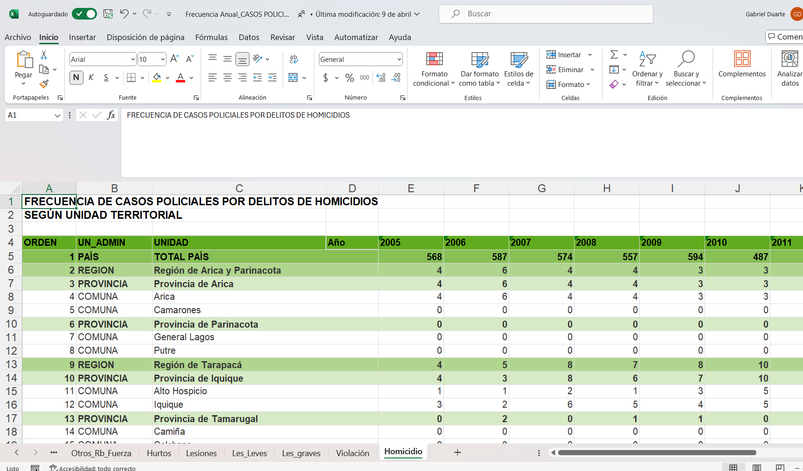
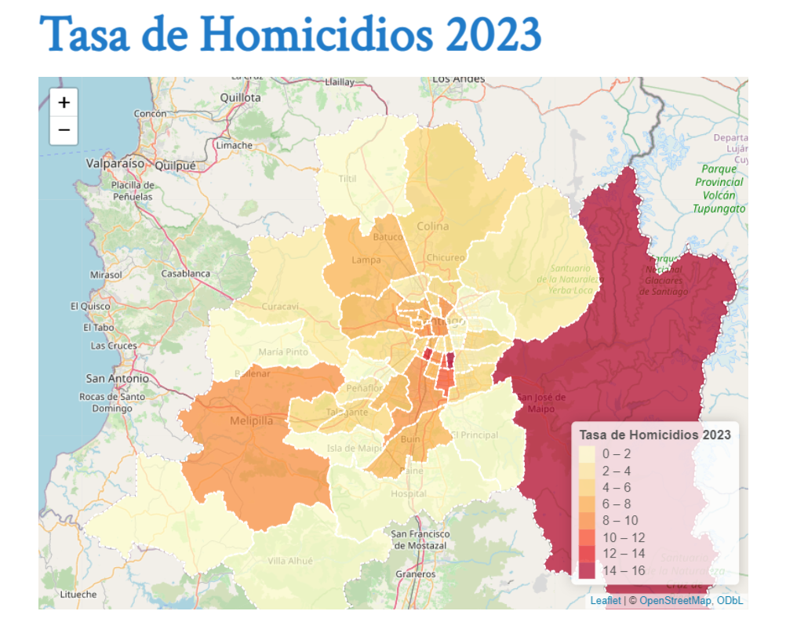
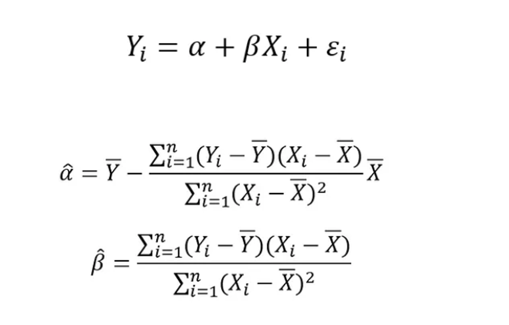
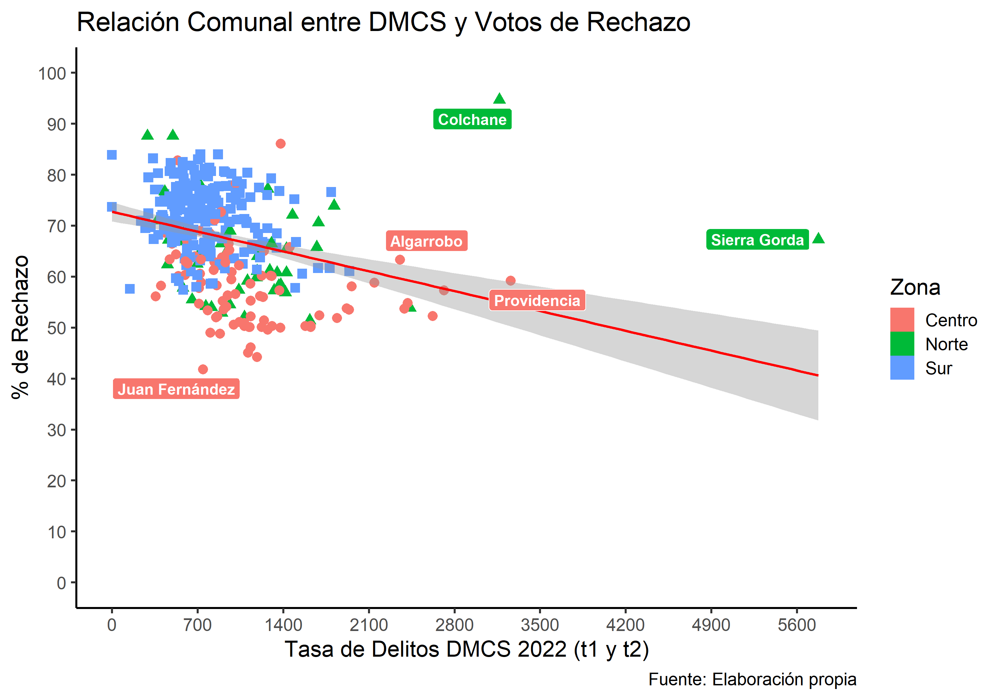
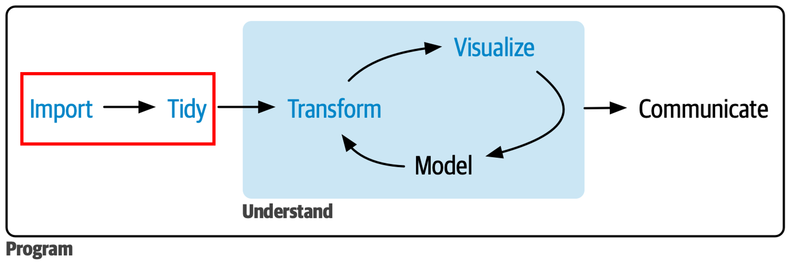
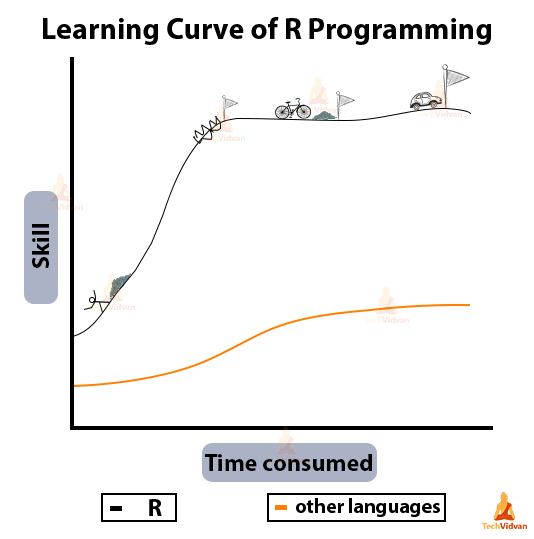
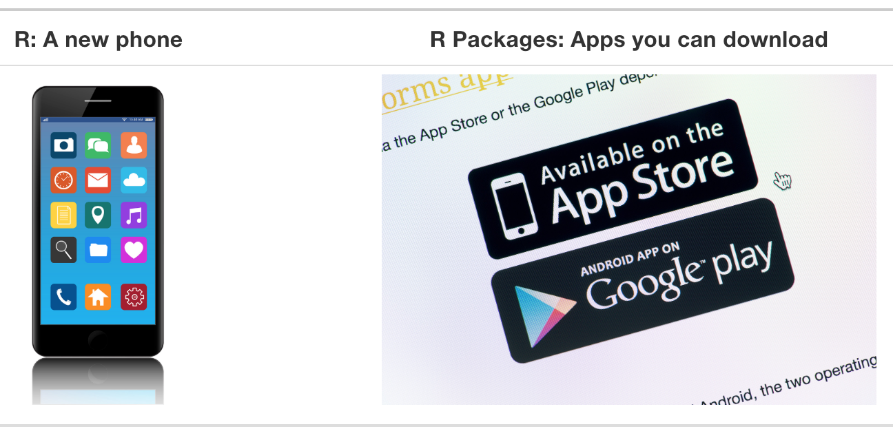
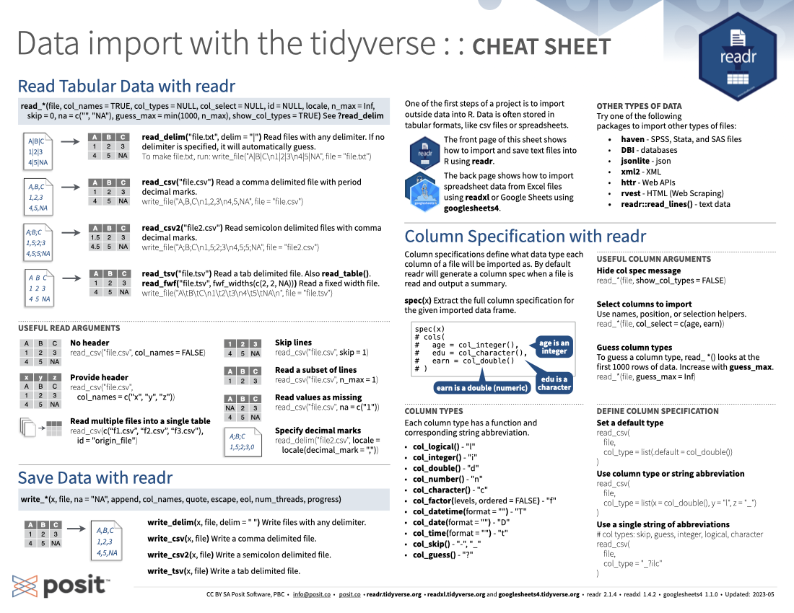
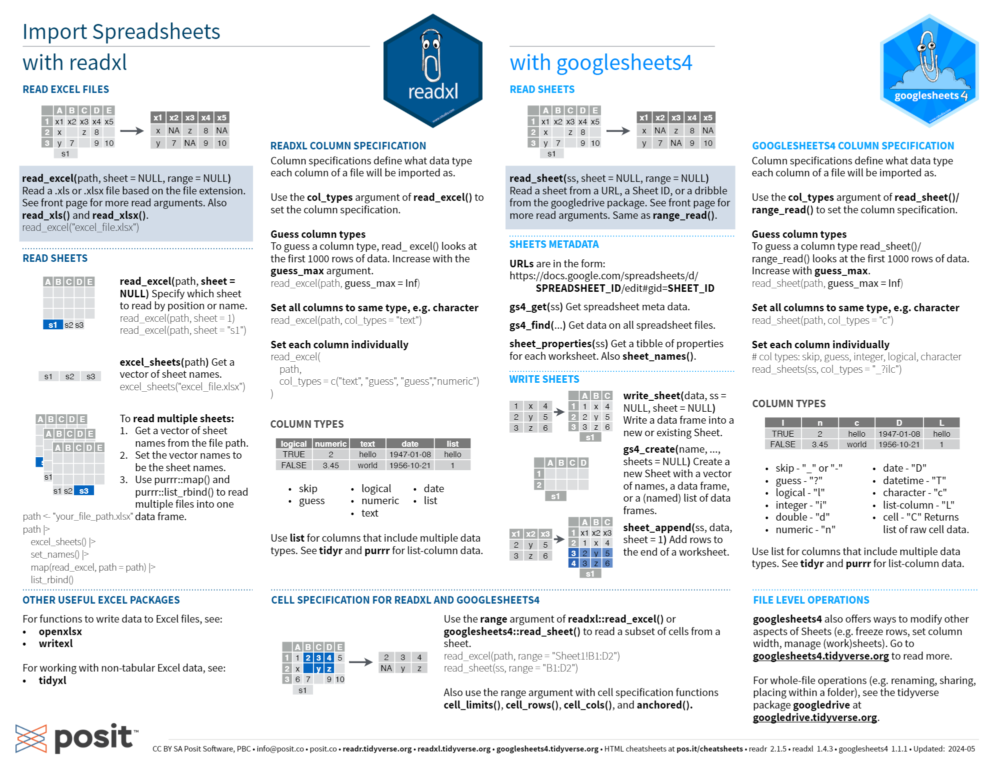
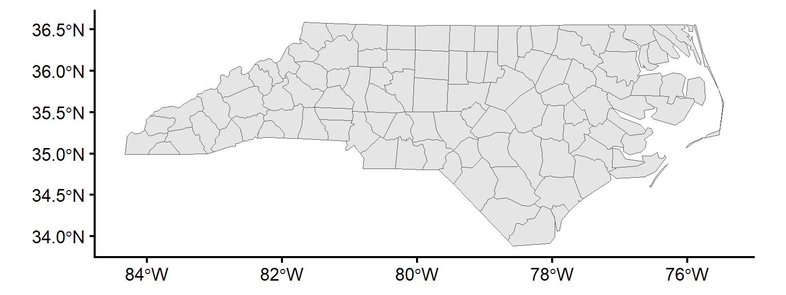

Clase 1: Importar Datos
Análisis de Datos y Estadística Computacional
Universidad Adolfo Ibáñez | DIAPP-2026
9 de junio de 2026
¡Bienvenid@s!
¿Hacia donde queremos llegar?


¿Hacia donde queremos llegar?


Objetivo Clase 1
Esta primera clase tiene como objetivo general introducirlos al curso de Análisis de Datos y Estadística Computacional y aprender a importar y cruzar bases de datos en R, dejándolas listas para transformarlas en las clases siguientes.
Como objetivos específicos se busca:
- Presentar el programa del curso y algunas de las reglas básicas
- Trabajar de manera ordenada y reproducible mediante proyectos (
.Rproj) - Aprender a importar bases de datos de distintos formatos:
.csv,.xlsx,.dta,.shp - Realizar una limpieza inicial de nombres con el paquete
janitor - Cruzar información de dos o más fuentes con
left_join()
Información General
- 8 clases en total con una duración de 3:20 hrs cada una.
- Se subirá el link de la presentación el mismo día previo al inicio de la clase para que los alumnos puedan seguirla en línea.
- El curso consta de 2 unidades de 4 clases cada una
- Unidad I: Herramientas de Ciencia de Datos con R
- Unidad II: Estadística Aplicada con R.
- Este curso requiere un 75% de asistencia para ser aprobado. Toda justificación debe ser enviada por correo siempre con copia al ayudante. Si tienen problemas con el horario de conexión, también pueden escribirle al ayudante por el chat privado de zoom y/o por correo.
- El canal principal de comunicación fuera de clases es Webcursos
Metodología
-
La clase se divide en diferentes secciones:
- 👨🏫 Exposición: Láminas de contenido que resumen el conocimiento principal esperado como resultado de aprendizaje, junto con código de ejemplo.
- 🧠 Preguntas: A lo largo de la clase se realizarán preguntas que pueden ir contestando en línea para evaluar el aprendizaje de cada sección.
- 💻 Ejercicio guiado: Ejercicio práctico resuelto de manera simultánea por el profesor junto con los alumnos.
- 👥 Ejercicio grupal: Ejercicios en grupos de 4-6 personas para resolver en conjunto los problemas propuestos. El profesor y ayudante pasarán por las salas recurrentemente.
- 🔒 Cierre: Resumen de los aspectos más relevantes y espacio final de preguntas.
📤 La grabación se subirá a Webcursos al finalizar cada clase.
Reglas Generales
- Durante clases se debe mantener la cámara prendida. Quienes no puedan por algún motivo deben avisar por medio de correo electrónico o chat privado de zoom a la ayudante.
- ¡Siéntanse libres de hacer consultas! Sin embargo, el mayor aprendizaje se adquiere a través de la práctica: ensayo y error.
- Toda comunicación y consultas fuera de clase deben realizarse a través del foro de webcursos: ¡no solo se beneficiarán ustedes, sino que también sus compañer@s!
- Las evaluaciones (tareas) son individuales.
Evaluación
-
Evaluaciones: 2 tareas, cada una pondera 50% de la nota:
- Tarea 1 (manejo, transformación y comunicación de datos con R): 28/06/2026
- Tarea 2 (modelamiento estadístico y reporte reproducible en Quarto): 19/07/2026
- Entregas: En formato html, con el código completo y la justificación o análisis escrito cuando corresponda. Toda entrega debe realizarse a través de webcursos en el buzón creado para ello.
- Cálculo de la nota: Sobre la base del puntaje obtenido en cada tarea: \[Nota = \left(\frac{\text{Puntaje obtenido}}{\text{Puntaje total}}\right)\times 6 + 1\]
- Aprobación del Curso: Promedio simple de ambas tareas igual o superior a 4,0 (escala de 1 a 7).
Bibliografía Principal

Y muchos libros más…
- Introduction to Modern Statistics (2e) (Çetinkaya-Rundel & Hardin) — Estadística aplicada con R con un enfoque moderno.
- R Cookbook (Long & Teetor) — consulta rápida de tareas cotidianas en R
- Fundamentals of Data Visualization (Wilke)
- ggplot2: Elegant Graphics for Data Analysis (Wickham)
- Using R for Introductory Econometrics (Heiss)
- Introduction to Econometrics with R (Hanck et al.)
- The Effect (Huntington-Klein) — inferencia causal aplicada
- Causal Inference: The Mixtape (Cunningham)
¿En qué consiste la primera parte del curso?

Principales herramientas de trabajo con datos
¿Qué veremos hoy?

Importar y Cruzar
Ventajas de programar
Supongamos que queremos realizar un documento corto de análisis que sirva de insumo para un tomador de decisiones de política pública
SIN PROGRAMACIÓN
- Ingresar a la web y descargar datos o solicitarlos
- Limpiar, ordenar, y analizar datos en MS Excel
- Escribir documento en MS Word
- Guardar en “algún lado” (ojalá no en “Mis Documentos” o “Descargas”)
CON PROGRAMACIÓN
- Crear una carpeta para el proyecto/tarea
datosscriptsresultados
- Descargar datos desde
Ro bien llamarlos desde nuestra carpeta datos - Limpiar, ordenar, y analizar datos en
Ra través de unscript - Escribir documento en
R MarkdownoQuarto
Reproducibilidad
Seis meses después se debe repetir la tarea
SIN PROGRAMACIÓN
- Recordar que se hizo
- Ingresar a la web y descargar datos
- Limpiar, ordenar, y analizar datos en MS Excel
- Escribir documento en MS Word
- Guardar en “algún lado” (ojalá no en “Mis Documentos” o “Descargas”)
CON PROGRAMACIÓN
- Ejecutar el código
¿Cuál es la principal dificultad?

Curva de aprendizaje del lenguaje R
Pero hay herramientas que lo facilitan …

Cheatsheets
Y una de las más usadas: help()
Antes de utilizar cualquier función, es útil consultar sus detalles (argumentos, valores, ejemplos, etc.) a través del comando help(x) o ?x
Rstudio, Proyectos y Orden en R
¿Qué es R y Rstudio?

R vs Rstudio
R es un lenguaje de programación que ejecuta código, mientras que RStudio es un entorno de desarrollo integrado (IDE) que proporciona una interfaz que facilita la ejecución y trabajo con R
Instalar R y Rstudio (Realizar en orden)
- Descargar R
- Descargar Rstudio
- Abrir Rstudio
Advertencia
Es importante que la ruta en donde se aloje R y Rstudio no tenga caracteres especiales
Importante
Una vez instalado R y Rstudio, solo deben abrir Rstudio para trabajar con R
¿Por qué trabajar con proyectos (.Rproj)?
Un proyecto de RStudio es una carpeta que contiene todo lo necesario para un análisis (datos, scripts, resultados) y un archivo .Rproj que la identifica como proyecto.
Sus principales ventajas:
-
Rutas relativas: el proyecto fija automáticamente el directorio de trabajo en su carpeta raíz, por lo que no necesitamos usar
setwd()ni rutas absolutas del tipo"C:/Users/.../mis documentos/...". - Portabilidad: el proyecto funciona igual en cualquier computador, sin tener que reescribir rutas.
- Reproducibilidad y orden: cada análisis vive en su propia carpeta, autocontenido.
Crear un proyecto en RStudio
File → New Project → New Directory → New Project, y elegimos el nombre y la ubicación de la carpeta.
- Abrir rstudio
- Hacer clic en file → New Project o en la esquina superior derecha
- Hacer clic en “New Directory” si no han creado una carpeta de trabajo de sus clases o “Existing Directory” si ya tienen definido donde trabajar
- Hacer clic en “New Project” si escogieron la opcion de “New Directory”
- Finalmente escoger el nombre del proyecto: “clase_01” y una ubicación (recomendada escritorio/DIAPP26)
Advertencia
Eviten que la ruta donde se aloja el proyecto tenga caracteres especiales (tildes, ñ, espacios, etc.), ya que pueden generar errores difíciles de diagnosticar.
Tip
Una vez creado el proyecto, ábranlo siempre haciendo doble clic en el archivo .Rproj así se abre RStudio con el directorio de trabajo ya configurado.
Estructura recomendada de subcarpetas
Dentro del proyecto conviene separar insumos, código y resultados. Una estructura simple y suficiente para este curso:
mi_proyecto/
├── mi_proyecto.Rproj # archivo del proyecto
├── data/ # datos de entrada (NO se modifican a mano)
│ ├── raw/ # datos originales tal como se descargaron
│ └── clean/ # datos ya procesados y guardados desde R
├── scripts/ # códigos .R o .qmd en orden de ejecución
├── output/ # resultados generados
│ ├── figuras/
│ └── tablas/
└── README.txt # breve descripción del proyectoTip
Regla de oro: los datos en data/raw/ se tratan como solo lectura. Toda transformación se hace en R y se guarda en data/clean/, de modo que siempre podamos reconstruir el resultado ejecutando el código.
La importancia del orden
Una de las ventajas de programar es la reproducibilidad: cualquier persona (¡o nosotros mismos en seis meses!) debería poder obtener los mismos resultados ejecutando los mismos pasos.
Por eso importa mantener el orden tanto en la carpeta del proyecto como en la sintaxis del script. Piensen en escribir su código como si escribieran una receta.
Ordenen su script en secciones (atajo:
CTRL + SHIFT + R) e intenten comentar el por qué de cada paso más que el cómo: el qué y el cómo siempre se pueden deducir del código, pero el por qué es lo más difícil de recuperar después.
Identación y estilo de código
Un código bien indentado y espaciado es más fácil de leer, depurar y compartir:


Identación y estilo de código
Algunas recomendaciones básicas de estilo:
- Dejen espacios alrededor de los operadores (
<-,+,==, etc.) y después de las comas. - En un pipeline (
|>), pongan cada paso en su propia línea, indentada. - Usen nombres descriptivos y en minúsculas para los objetos.
Tip
RStudio puede ayudarles: seleccionando el código y presionando CTRL + SHIFT + A lo re-indenta automáticamente. El paquete styler permite estandarizar todo un script con un clic (install.packages("styler") y luego clic en Addins).
Uso de paquetes (packages)

Analogía entre R y paquetes de R
- Al igual que cuando utilizamos una aplicación en nuestro celular, primero debemos instalarla y luego abrirla o utilizarla.
- El comando básico para instalar paquetes es la función
install.packages(). Es importante notar que el nombre del paquete que se instale a través de esta función debe ir entre comillas: e.g.install.packages('tidyverse') - Una vez instalado el paquete, lo cargamos o llamamos a través de la función
library(). En este caso, el nombre del paquete no debe ir entre comillas: e.g.library(tidyverse)
Paquetes y pacman
- Para instalar un paquete:
install.packages('tidyverse')(el nombre entre comillas). - Para cargarlo:
library(tidyverse)(el nombre sin comillas).
A lo largo del curso usaremos indistintamente la función p_load() del paquete pacman, que combina ambos pasos: “si el paquete está instalado, cárgalo; si no, descárgalo y luego cárgalo”. Esto asegura que todos trabajemos con las mismas librerías:
Primeras complicaciones
R informa errores (errors), advertencias (warnings) y mensajes (messages) en un color que resalta, lo que hace que parezca que algo va mal en nuestro código. Sin embargo, ver texto de colores en la consola no siempre representa un problema:
- Errors: Si el texto comienza con Error, investiguen qué lo está causando. Piensen en los errores como en un semáforo en rojo: ¡algo anda mal!
- Warnings: Si el texto comienza con Warning, indaguen si es algo de qué preocuparse. Por ejemplo, si reciben una advertencia sobre valores faltantes en un diagrama de dispersión y saben que faltan valores, está bien. Piensen en las advertencias como en un semáforo en amarillo: todo funciona bien, pero presten atención a lo que están ejecutando.
- Messages: Piensen en los mensajes como un semáforo en verde: ¡todo funciona bien, por lo que sigan adelante!
Algunos tips para mejorar en programación
- Las computadoras no son autónomas (o tan inteligentes): Requieren de instrucciones entregadas por humanos, por lo que es muy relevante entender los inputs que uno le entrega al software para que ejecute una acción que queremos realizar.
- Ocupar el copy, paste, and tweak approach: Muchas veces es más fácil tomar un código existente que sabemos que funciona y lo modificamos acorde a nuestros objetivos y fuentes de datos.
- La mejor forma de de aprender a programar es haciendo y ejecutando códigos: Piensen en las tareas que realizan cotidianamente y que involucren un trabajo con datos. Traten de aplicar lo aprendido a lo largo del curso a problemas/desafíos concretos que enfrenten.
- Practicar, equivocarse, aprender y seguir practicando: ¡La práctica y la dedicación les permitirá avanzar en las primeras etapas de aprendizaje!
Funciones básicas a tener en consideración
-
view(): Es equivalente a hacer click en el objeto mostrado en el Global Environment. -
head(): Permite mostrar las primeras observaciones del objeto indicado. -
help(): Entrega toda la documentación de la función. En particular, es muy útil para saber los argumentos de la función y cuáles valores puede tomar. -
print(): Imprime el objeto indicado. En dataframes extensos, se recomienda utilizarhead()en lugar deprint(). -
str(): Detalla la estructura y clase de cada componente del objeto indicado. -
glimpse(): Función del paquetedplyrque realiza algo similar astr()pero de manera más ordenada y mostrando una mayor cantidad de información. -
summary(): Resume las estadísticas descriptivas generales del objeto indicado, incluyendo la cantidad deNAen caso de que existan.
El operador pipe |>
- En R, el pipe
|>permite encadenar funciones pasando el resultado de una expresión como primer argumento de la siguiente. - Hace el código más legible: se lee de izquierda a derecha, como una receta de pasos.
Sin pipe, las funciones se anidan de adentro hacia afuera:
Con pipe, cada paso queda en su propia línea, en orden de ejecución:
Atajo de teclado
Ctrl + Shift + M inserta el pipe |> automáticamente en RStudio. Si te aparece %>% en vez de |>, ve a Tools → Global Options → Code y activa “Use native pipe operator”.
Importar y Exportar Datos
Preliminares
- Para importar datos usaremos una familia de funciones con el prefijo
read. - Los formatos más comunes con los que trabajaremos:
- Valores separados por comas:
.csv - Archivos Excel:
.xlsxo.xls - Datos de
STATA:.dta - Datos espaciales (ESRI Shapefile):
.shp
- Valores separados por comas:
Tip
Cada formato tiene su función y, muchas veces, su propio paquete: readr para texto plano, readxl para Excel, haven para STATA/SPSS y sf para datos espaciales.
readr: importar CSV
- csv separados por coma (,):
read_csv() - csv separados por punto y coma (;):
read_csv2() - Separados por un delimitador específico:
read_delim(file, delim)

Archivos separados por coma: .csv
| Student ID | Full Name | favourite.food | mealPlan | AGE |
|---|---|---|---|---|
| 1 | Sunil Huffmann | Strawberry yoghurt | Lunch only | 4 |
| 2 | Barclay Lynn | French fries | Lunch only | 5 |
| 3 | Jayendra Lyne | N/A | Breakfast and lunch | 7 |
| 4 | Leon Rossini | Anchovies | Lunch only | NA |
| 5 | Chidiegwu Dunkel | Pizza | Breakfast and lunch | five |
| 6 | Güvenç Attila | Ice cream | Lunch only | 6 |
Tip
La función head() devuelve las primeras 6 observaciones. ¡Úsenla siempre para inspeccionar visualmente sus objetos!
Un argumento útil: na
La comida favorita de la fila 3 dice "N/A", pero R no la reconoce como dato faltante. Podemos indicarle qué tratar como NA:
students <- read_csv("https://pos.it/r4ds-students-csv",
na = c("N/A", ""))
head(students) |>
kable()| Student ID | Full Name | favourite.food | mealPlan | AGE |
|---|---|---|---|---|
| 1 | Sunil Huffmann | Strawberry yoghurt | Lunch only | 4 |
| 2 | Barclay Lynn | French fries | Lunch only | 5 |
| 3 | Jayendra Lyne | NA | Breakfast and lunch | 7 |
| 4 | Leon Rossini | Anchovies | Lunch only | NA |
| 5 | Chidiegwu Dunkel | Pizza | Breakfast and lunch | five |
| 6 | Güvenç Attila | Ice cream | Lunch only | 6 |
Archivos separados por punto y coma: .csv con read_csv2()
- Muchos archivos generados en contextos hispanohablantes usan
;como separador (porque la coma se usa como separador decimal). En ese caso usamosread_csv2():
readxl: importar archivos Excel
- Para importar archivos Excel usamos
read_excel(). Sus argumentos principales:-
path: ruta del archivo. Debe terminar con la extensión (.xlsxo.xls). -
sheet: número (1, 2, …) o nombre de la hoja entre comillas. -
range: rango de celdas a leer, en formato Excel y entre comillas, p. ej."B1:D5". -
skip: cantidad de filas a ignorar antes de leer.
-

Aplicación: leer un Excel con sheet y range
[1] "mtcars" "chickwts" "quakes"
haven: archivos de STATA .dta 

- Para leer archivos
.dta(STATA) usamosread_dta()del paquetehaven:
ruta_dta <- system.file("examples", "iris.dta", package = "haven")
iris_stata <- read_dta(ruta_dta)
head(iris_stata)# A tibble: 6 × 5
sepallength sepalwidth petallength petalwidth species
<dbl> <dbl> <dbl> <dbl> <chr>
1 5.10 3.5 1.40 0.200 setosa
2 4.90 3 1.40 0.200 setosa
3 4.70 3.20 1.30 0.200 setosa
4 4.60 3.10 1.5 0.200 setosa
5 5 3.60 1.40 0.200 setosa
6 5.40 3.90 1.70 0.400 setosa Tip
haven también lee SPSS (read_sav()) y SAS (read_sas()) con la misma lógica.
Archivos Georreferenciados
Para trabajar archivos georreferenciados utilizaremos una de las librerías más reconocidas en el entorno de R para manejar datos espaciales:
sfo simple features.No profundizaremos en el manejo de datos espaciales (lo cual se verá en detalle en el módulo de Geoanálisis), pero intentaremos realizar mapas básicos para mostrar información que y captar la atención de la audiencia. Esto puede ser muy útil a la hora de comunicar resultados de manera efectiva.
La función básica para leer archivos georreferenciados es
st_read()del paquetesf.Existen diferentes formatos de archivo para los datos de georreferenciados, pero el más común es probablemente el ESRI shapefile. A pesar de que se llama de manera singular, en realidad se compone de al menos cuatro archivos diferentes que trabajan juntos para almacenar los datos:
.dbf.shx.prj.shp.Lo importante es que estos archivos esten siempre juntos en la misma carpeta. Cumpliendo eso, solo debemos preocuparnos de cargar el archivo de extensión
.shp
Archivos georreferenciados
En resumen:
- Para datos espaciales usaremos el paquete
sf(simple features) y la funciónst_read(). - Un shapefile en realidad se compone de varios archivos (
.shp,.dbf,.shx,.prj) que deben estar juntos en la misma carpeta. Solo cargamos el.shp.
Archivos georreferenciados: Visualización
Para mostrar un mapa podemos usar ggplot2 (en la clase 3 profundizaremos este tema):

Nota
No profundizaremos en el manejo ni la visualización de datos espaciales: veremos los mapas en detalle en la Clase 3.
Formato moderno: Apache Parquet
- Los formatos que hemos visto (
.csv,.xlsx,.dta) tienen una limitación importante: a medida que los datos crecen, se vuelven lentos de leer y pesados en disco. - El formato Parquet (paquete
arrow) resuelve esto mediante almacenamiento en columnas y compresión automática.
Ventajas
-
Tamaño: un
.csvde 1 GB puede ocupar ~150 MB en Parquet. - Velocidad: lee solo las columnas que necesitas, no el archivo completo.
- Tipos de datos: preserva fechas, factores y enteros sin conversiones al importar.
-
Interoperable: Python (
pandas), SQL, Spark y R lo leen nativamente.
Cuándo usarlo
- Archivos grandes (> 100 MB).
- Datos que se leen muchas veces y rara vez se editan a mano.
- Flujos de trabajo que mezclan R y Python.
- Cuando compartir un
.csvtarda demasiado.
Leer y escribir Parquet con arrow
La sintaxis es idéntica a read_csv() / write_csv(): un argumento de ruta de entrada o salida y listo.
Tip
Para este curso no es obligatorio, pero es una buena práctica guardar sus bases procesadas en Parquet una vez limpias: la próxima vez que las carguen será notablemente más rápido.
Limpieza inicial de nombres: janitor::clean_names()
- Muchas bases reales traen nombres de columna “sucios”: con mayúsculas, espacios, tildes o caracteres especiales que dificultan trabajar con ellos.
- La función
clean_names()del paquetejanitorlos estandariza a un formato limpio y consistente (minúsculas, sin tildes, con guion bajo).
Limpieza inicial de nombres: janitor::clean_names()
Tip
Aplicar clean_names() justo después de importar es una excelente costumbre: nos ahorra muchos errores posteriores al referirnos a las columnas.
🧠 Pregunta N° 1
Tenemos un archivo Excel generado por un servicio público chileno. Al abrirlo en Excel, vemos que las primeras 3 filas son encabezados combinados con el nombre del reporte y la fuente, y los datos reales comienzan en la fila 4.
¿Cuál es la forma correcta de importarlo a R?
read_excel("archivo.xlsx")read_excel("archivo.xlsx", skip = 3)read_excel("archivo.xlsx", sheet = 3)read_csv("archivo.xlsx")
Ejercicio Guiado: importar y limpiar
Ver Guía de Ejercicios N°1, Parte I.
Guardar o Exportar
- La familia de funciones es
write_ - Siempre deben especificar la extensión del archivo luego del path. Por ejemplo:
-
mtcars.csvsi queremos guardarlo como un archivo csv -
mtcars.dtasi queremos guardarlo como un archivo de STATA -
mtcars.xlsxsi queremos guardarlo como un archivo excel, etc.
-
Guardar o Exportar
-
readr:
write_delim(mtcars, 'mtcars.txt', delim = " ")write_csv(mtcars, 'mtcars.csv')write_csv2(mtcars, 'mtcars.csv')write_tsv(mtcars, 'mtcars.tsv')
-
haven:
write_dta(mtcars, 'mtcars.dta')write_sav(mtcars, 'mtcars.sav')write_xpt(mtcars, 'mtcars.xpt')
-
parquet:
write_parquet(mtcars,'mtcars.parquet')
-
RDS:
write_rds(mtcars,'mtcars.parquet')
Exportar a Excel
Para exportar archivos excel se recomienda usar una librería adicional: openxlsx:
Advertencia
- Notar que a diferencia de las otras funciones write en donde la extensión va precedida por un
_la del paqueteopenxlsxes precedida por un. - Deben prestar mucha atención a la sintaxis exacta de la funciones que ocupen, ya que por ejemplo, una de las librerías base de
Rtiene funciones similares a las ya revisadas, pero que operan de manera distinta (por ejemplo,read.csv)
Cruce de Datos: left_join
¿Por qué cruzar bases de datos?
Al trabajar con datos rara vez tenemos toda la información en una sola tabla: lo habitual es combinar varias fuentes vinculadas entre sí.
-
Existen dos grandes familias de uniones:
- Mutating joins: agregan nuevas variables a una tabla a partir de coincidencias en otra.
- Filtering joins: filtran las observaciones de una tabla según si coinciden o no con otra.
En este curso nos centraremos en el
left_join(), el mutating join más usado: conserva todas las filas de la tabla de la izquierda y le agrega las columnas de la derecha.
left_join(): argumentos
- Función a utilizar:
left_join() - Argumentos importantes:
-
x: el dataframe base (al que se le añaden variables). -
y: el dataframe con la información adicional que queremos agregar. -
by: la llave o variable que permite unir ambas tablas.
Tip
La llave se puede especificar con join_by(). Por ejemplo, join_by(a == b) cruza x$a con y$b cuando las columnas tienen nombres distintos.
left_join() gráficamente

Left Join
Aplicación: left_join()
Tenemos dos tablas de comunas vinculadas por su código (cod_comuna):
Cuando las llaves tienen distinto nombre
Si la llave se llama distinto en cada tabla (cod_comuna vs. codigo), lo indicamos con join_by():
poblacion2 <- tibble(
codigo = c(13101, 13102, 13201),
poblacion = c(503147, 88056, 645909)
)
comunas |>
left_join(poblacion2, join_by(cod_comuna == codigo))# A tibble: 3 × 3
cod_comuna comuna poblacion
<dbl> <chr> <dbl>
1 13101 Santiago 503147
2 13102 Cerrillos 88056
3 13201 Puente Alto 645909Advertencia
Si no especificamos by, R usará como llave todas las columnas con el mismo nombre en ambas tablas (natural join), lo que a veces produce cruces no deseados.
🧠 Pregunta N° 2
Tenemos dos tablas: hospitales con columna cod_comuna y poblacion con columna codigo. Queremos añadirle la población censada a cada hospital, conservando todos los hospitales aunque no encuentren coincidencia.
¿Cuál es el código correcto?
left_join(poblacion, hospitales, join_by(codigo == cod_comuna))left_join(hospitales, poblacion, by = 'cod_comuna')left_join(hospitales, poblacion, join_by(cod_comuna == codigo))inner_join(hospitales, poblacion, join_by(cod_comuna == codigo))
Ejercicio Grupal (20-30 min)
Resolver parte II de la guía de ejercicios. Trabajarán en salas pequeñas resolviendo la parte II de la guía de ejercicios subida a Webcursos
Ordenar Datos
Tidy data
- Una variable es una cantidad, cualidad o propiedad que se puede medir.
- Un valor es el estado de una variable cuando se mide. El valor de una variable puede cambiar de una medida a otra.
- Una observación es un conjunto de mediciones realizadas en condiciones similares (por lo general, se realizan todas las mediciones en una observación al mismo tiempo y en el mismo objeto). Una observación contendrá varios valores, cada uno asociado con una variable diferente. A veces nos referiremos a una observación como un punto de datos.
Los datos tidy o tabulares son un conjunto de valores, cada uno asociado con una variable y una observación. Los datos tabulares están en formato tidy si cada valor se coloca en su propia celda, cada variable en su propia columna y cada observación en su propia fila.
Tidy data

Datos Ordenados en formato tidy
Alargar el data frame (lengthening data): Más Filas u Observaciones
- Función a utilizar:
pivot_longer() - Argumentos importantes:
-
data: El dataframe a pivotear (implícito si utilizamos un pipeline con un dataframe que le preceda) -
cols: El conjunto de variables a pivotear en formato longer -
names_to: Un string que especifica la nueva columna o columnas para crear a partir de la información almacenada en los nombres de columna de los datos especificados porcols -
values_to: Un string que especifica el nombre de la columna para crear a partir de los datos almacenados en el valor de la celda
Tip
El argumento clave de esta función es cols, ya que esta indica las columnas que queremos pasar a un formato long.
Ensanchar el data frame (widening data): Más Columnas o Variables
- Función a utilizar:
pivot_wider() - Argumentos importantes:
-
data: El dataframe a pivotear (implícito si utilizamos un pipeline con un dataframe que le preceda) -
names_from: El conjunto de variables a pivotear en formato wider (sobre qué columna(s) se obtendrá el nombre de la columna de salida) -
values_from: El conjunto de variables desde donde se obtendrán los valores de las nuevas columnas creadas.
Tip
En este caso, tanto names_from como values_from son clave para poder ejecutar correctamente la función.
Aplicación Pivot Longer
Veamos un data set sencillo que muestra el número de casos de Tuberculosis documentados por la Organización Mundial de la Salud en Afganistán, Brasil y China entre 1999 y 2000: ver aquí
Los datos contienen valores asociados con cuatro variables (país, año, casos y población), pero cada tabla organiza los valores en un diseño diferente.
Aplicación Pivot Longer
- A continuación, se muestra una parte de este dataset en formato no tidy:
# A tibble: 3 × 3
country `1999` `2000`
<chr> <dbl> <dbl>
1 Afghanistan 745 2666
2 Brazil 37737 80488
3 China 212258 213766- Se puede apreciar que los nombres de columna 1999 y 2000 representan valores de la variable año, los valores en las columnas 1999 y 2000 representan valores de la variable casos, y cada fila representa dos observaciones en lugar de una.
Aplicación Pivot Longer
- Para transformar este dataset en uno tidy, podemos ocupar la función
pivot_longer, es decir, agrandar la base de datos hacia abajo o bien, con más observaciones:
Aplicación Pivot Longer

Pivot Longer
Aplicación Pivot Wider
Analicemos otro diseño del mismo dataset original:
# A tibble: 12 × 4
country year type count
<chr> <dbl> <chr> <dbl>
1 Afghanistan 1999 cases 745
2 Afghanistan 1999 population 19987071
3 Afghanistan 2000 cases 2666
4 Afghanistan 2000 population 20595360
5 Brazil 1999 cases 37737
6 Brazil 1999 population 172006362
7 Brazil 2000 cases 80488
8 Brazil 2000 population 174504898
9 China 1999 cases 212258
10 China 1999 population 1272915272
11 China 2000 cases 213766
12 China 2000 population 1280428583En este caso, el problema es que una observación es un país en un año, pero cada observación se distribuye en 2 filas. Para solucionarlo, ocupamos pivot_wider, es decir, agrandar la base de datos hacia el lado o bien, con más columnas o variables
Aplicación Pivot Wider
# A tibble: 6 × 4
country year cases population
<chr> <dbl> <dbl> <dbl>
1 Afghanistan 1999 745 19987071
2 Afghanistan 2000 2666 20595360
3 Brazil 1999 37737 172006362
4 Brazil 2000 80488 174504898
5 China 1999 212258 1272915272
6 China 2000 213766 1280428583- Notar que los argumentos operan de manera análoga al
pivot_longer.
Aplicación Pivot Wider

Pivot Wider
Recapitulación
¿Qué aprendimos hoy?
- A trabajar de forma ordenada y reproducible mediante proyectos (
.Rproj) y una estructura clara de subcarpetas. - A importar bases de datos de los formatos más comunes:
.csv(read_csv/read_csv2), Excel (read_excel), STATA (read_dta) y espaciales (st_read). - A hacer una limpieza inicial de nombres con
janitor::clean_names(). - A cruzar información de dos fuentes con
left_join().
La próxima clase profundizaremos en cómo ordenar y transformar estas bases (tidyr, dplyr) para dejarlas listas para el análisis.
Bibliografía